Preconstruction
- Cost estimating
- Value engineering
- Constructability review
- Site logistics planning
- Permit expediting
- Design / Build
- Construction Manager @ Risk
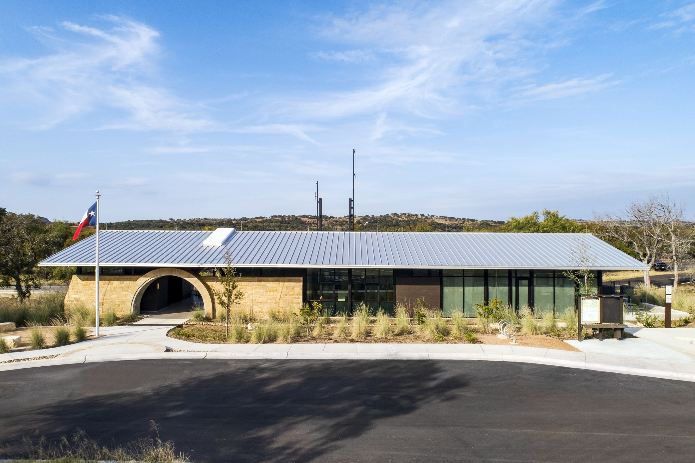
Commercial General Contractor · Austin & Central Texas · Since 2015
Full-service commercial construction, tenant improvement and healthcare construction, delivered with the utmost quality, on time and within budget.
Inks Lake State Park Headquarters · Texas Parks & Wildlife · Built by Gilger Contractors
Featured project
Headquarters replacement project for Texas Parks & Wildlife, built by Gilger Contractors.
What we do
Beginning with preconstruction services through project execution, we continually look out for our client's best interest.
Project portfolio
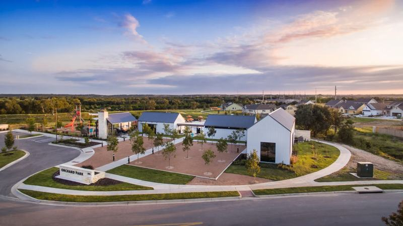
Amenity center designed by McKinney York Architects: fitness room, community room, bathhouse, covered patio, playgrounds, pool, splash pad and landscape.
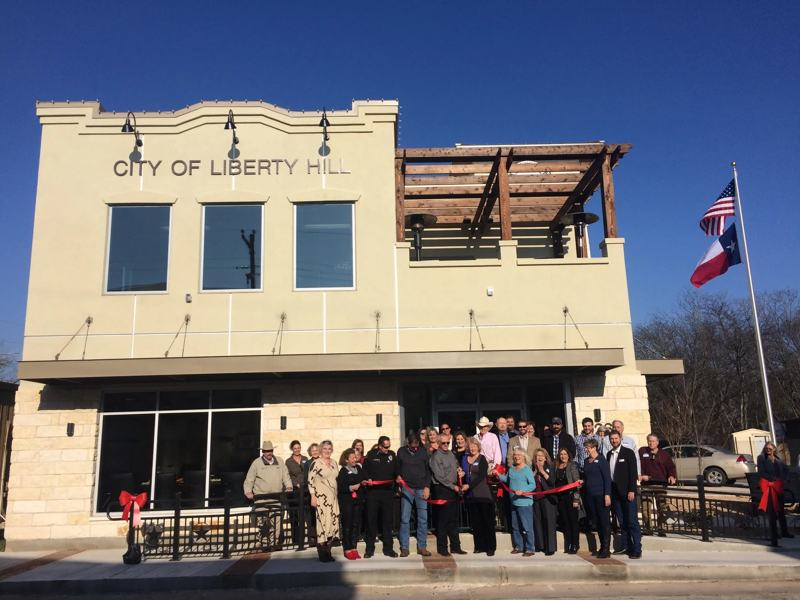
Ground-up 6,500 SF wood-framed office and administration building with high-end interior finishes, plus new sidewalks, parking and utilities.
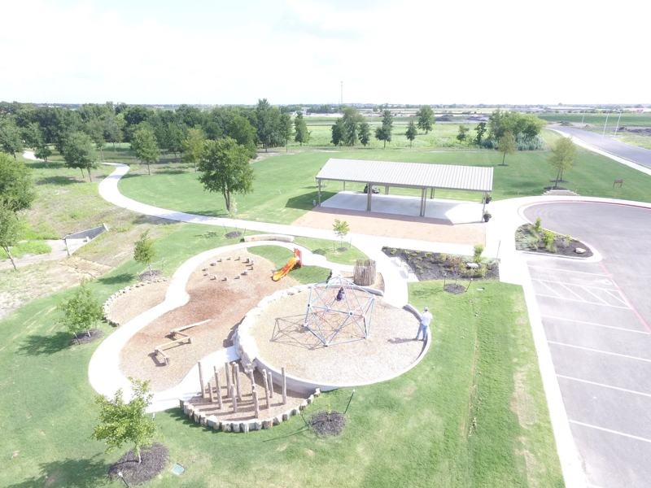
Covered pavilion, playground, rock climbing wall, detention pond and fishing dock with landscape improvements.
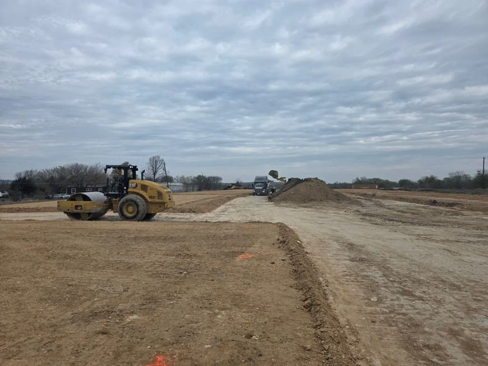
Ground-up 40,000 SF office / warehouse development with full site development.
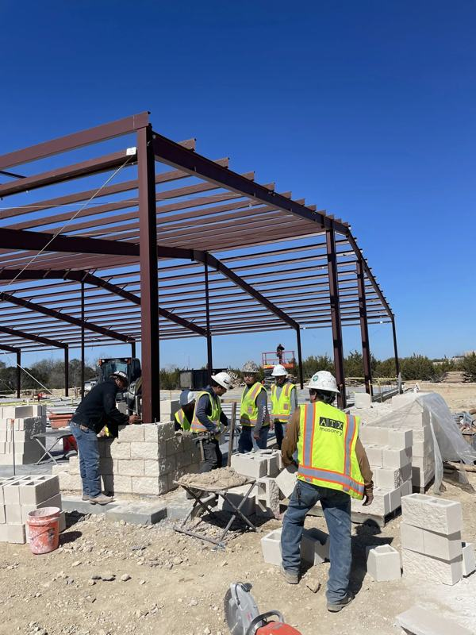
Ground-up 20,000 SF office / warehouse: pre-engineered metal building with masonry exterior walls, office, showroom and warehouse finish-out.
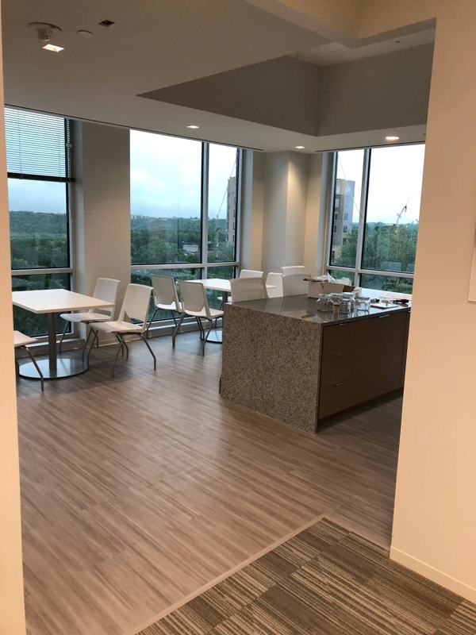
One of a number of Class A corporate interior finish-out projects.
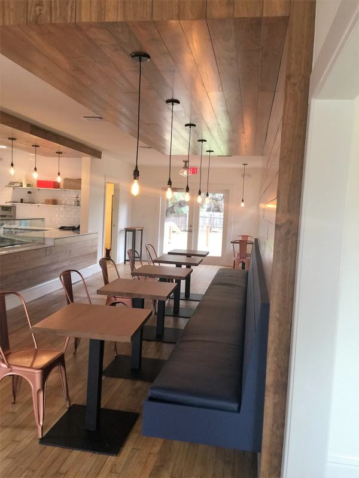
Interior renovation of an 80-year-old former art gallery: new commercial kitchen, preserved original hardwood floors, modern open layout.
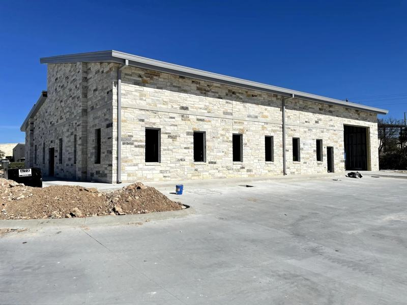
Ground-up 8,000 SF pre-engineered metal building with insulated roof panels, sitework and covered parking.
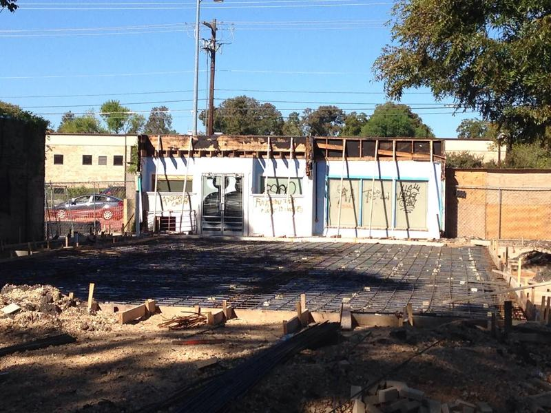
Demolition and new 3,400 SF shell space while maintaining the historic front facade on Guadalupe.
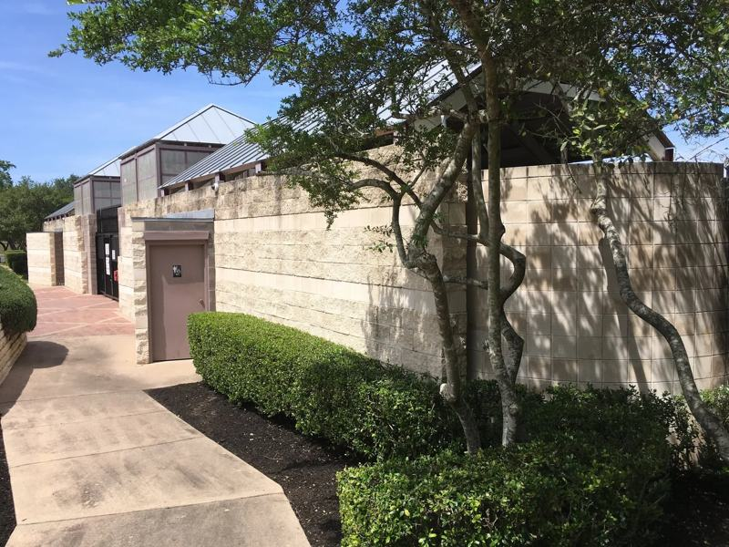
Construction and renovation: wood framing and CMU/masonry, updated bathrooms and common areas.
About Gilger Contractors
Gilger Contractors is a full-service commercial general contractor serving Austin and Central Texas, with emphasis on commercial construction, tenant improvement and healthcare construction.
Our mission is to be a dependable and valued partner to our clients. Beginning with preconstruction services through project execution, we continually look out for our client's best interest, and we promise to deliver the utmost quality projects on time and within budget.
Scott Gilger founded the company in October 2015. A Texas A&M civil engineering graduate and LEED AP, Scott brings over 20 years of experience in commercial general contracting.
Leadership
President & Founder
Scott founded Gilger Contractors in 2015. He holds a B.S. in Civil Engineering from Texas A&M University and brings over 20 years of commercial general contracting experience. Gilger Contractors is owner-led: Scott stays involved on every project, from preconstruction through closeout.
Subcontractors & suppliers
We actively bid work across Central Texas. Contact us to register for bid solicitations.
Careers
Interested in joining the Gilger Contractors team?
Contact
Let us be a part of your team. Send plans and specs or give us a call.
PO Box 162665
Austin, TX 78716